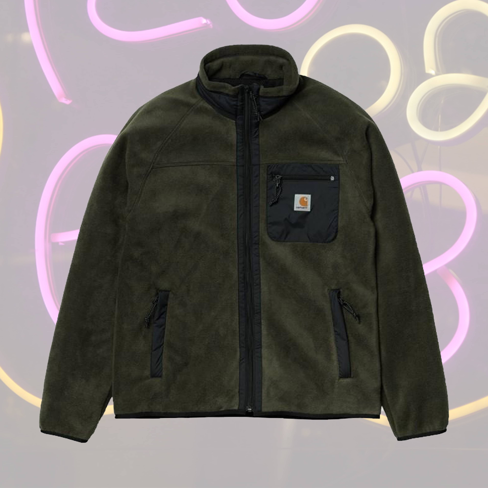
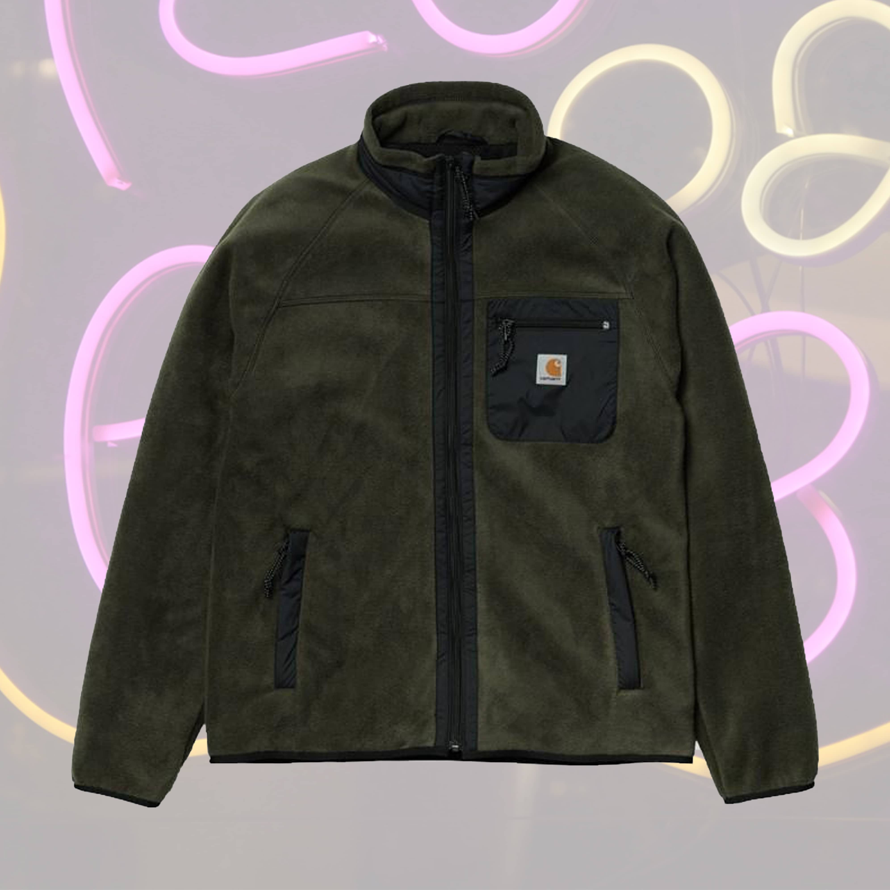

TJ’S FAVOURITES
My personal favorites for this winter season is checkered prints, soft and warm materials. This season I’m really into grounded earth colors and many layers to keep me warm and comfortable during all kinds of Copenhagen weather.
I hand picked my absolute favourite items to share with you.
I choose the Carhartt LS Rugby polo, it goes with everything - a good basic everyday wear.
The Libertine Libertine Novel shirt has the perfect checkered print in super nice earth tones and is a shirt that fits really well.
The AA Beanie is 100% merino wool, super soft and warm and is the perfect color for my looks during the season, a perfect fit with the AA Seaman grey turtleneck sweater, also 100% merino wool.
I have also chosen the New Balance CM997HFU in the color way leaf green which is an all time sneaker favorite of mine.
The Wood Wood Stanly trousers 8008 in dark army are a perfect match for the sneakers. I will style it with the Carhartt Prentis Liner Fleece in green and black, perfect under a coat to add layers.
The Clarks Wallabee black suede are an all time favorite item for me, a timeless design that will never go out of style.
Last but not least, The North Face M1996 Nuptse jacket in black to keep me warm all winter.
SHOP TJ’S FAVOURTIES
GO TO WEBSHOP


 
